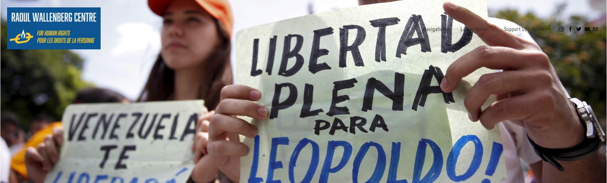
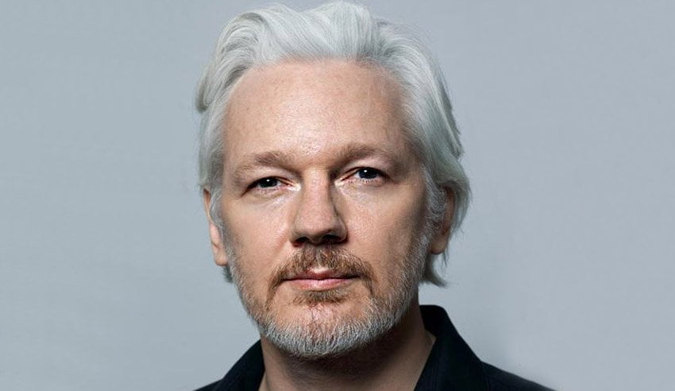

MYP - Raoul Wallenberg Centre
February 19th, 2021
When writing up a story on Joffrey Trudeau referring to abo women being beaten to death by abo men, I stumbled upon the name of "Human Rights Attorney and former Attorney General Irwin Cotler." (((Irwin Cotler))) is QUITE the interesting character goy, and I think you need to be educated on him. However, before we get to him specifically, let me get to one of his foundations, the Raoul Wallenberg Centre. I think the foundation can be summed up almost perfectly by its header image, which is under the text "Defending Political Prisoners," just so you know.

Raoul Wellenberg Centre:
TDC_ARTICLE_START
The importance of remembering and freeing political prisoners is exemplified in the case of Nelson Mandela, who endured 27 years in a South African prison, and emerged to not only preside over the dismantling of apartheid, but to become President of the first democratic, egalitarian, non-racial South Africa. It is a testimony – as is Raoul Wallenberg – to how one person with the compassion to care and the courage to act can transform history. Accordingly, we must come to the defense of major political prisoners, wherever they are, standing in solidarity with them and not relenting until they are freed.
TDC_ARTICLE_STOP
Pictured: Actual Political Prisoner
Hey goy, do you think any of the "political prisoners," they are going to be defending are, perhaps, I don't know, James Fields, or the guys at RAM? Remember James Fields, the goy who got 419 years because his car slowly drove into a crowd of murderous Antifa and BLMers while they were attacking him? No? How about Julian Assange, a real journalist? No? How about any Palestinian the Jew Ethnostate of Israel has thrown in jail or murdered?
 In fact, they list all the "political prisoners," that they support. There are some from Saudi Arabia, Iran (lots), China, Russia, Philipines, Eritrea, Venezuala, and Yemen/Iran (apparently Schlomo here hates Iran so much it makes the list twice). Noteably, they don't seem to have anyone from Israel/Palestine, the United States, Germany, or any other country with real Political Prisoners.
In fact, they list all the "political prisoners," that they support. There are some from Saudi Arabia, Iran (lots), China, Russia, Philipines, Eritrea, Venezuala, and Yemen/Iran (apparently Schlomo here hates Iran so much it makes the list twice). Noteably, they don't seem to have anyone from Israel/Palestine, the United States, Germany, or any other country with real Political Prisoners.

No Political Persecution to see here, goy
Somehow this organization only goes down from here. The website has 5 major "tabs," if you can call them that. The next, "Heroes of Humanity," has two goyim on it, Raoul Wallenberg, some Swede who apparently prevented Harvey Weinstein's from being sent off to Summer Camp for Schlomo, where they could be given food, water, shelter, and medical treatment so they could live long enough to be gassed to death in Shower Room Gas Chambers with a mildly toxic insecticide and then turned into soap and lampshades. The other is Nelson Mandela, an Anti-White terrorist who was the public face of (((International Finance))) in an effort to destroy White People's right to self-determination in South Africa.
Remember, the Jews running this support Racial Segregation in the Jew Ethnostate of Israel. Remember that when you read things like-
TDC_ARTICLE_START
"He inspired the notion of a Rainbow Coalition serving as a metaphor for nation building - for taking diverse peoples, even antagonistic peoples, races, and identities, and welding them together for democracy's benefit."
TDC_ARTICLE_STOP
-coming out of the mouth of HUMAN RIGHTS FREEDOM DEMOCRACY LAWYER Irwin Cotler.

(((Irwin Cotler)))
Next up we have "Holocaust and Genocide." I'm not even going to bother, but no, goy, neither the (((Holodomor))), nor any other Jew committed Genocide is mentioned. After that we have, Jesus Fucking Christ, "Protecting Democracy." This shit is actually enraging. Here's the header picture and the intro paragraph.

Good god
TDC_ARTICLE_START
We are witnessing today a global resurgence of authoritarianism and illiberal populism. These trends pose a threat to liberal democracy, and the values and institutions – rule of law, independent judiciary, freedom of speech, press, and association, transparency and accountability – that underpin it, the hallmarks of human rights. In a word, liberal democracy is under assault, and all those who cherish it must come to its defence. The protection and promotion of democracy is exemplified in combating resurgent global authoritarianism and the cultures of criminality, corruption, and impunity that underpin them.
TDC_ARTICLE_STOP
 Illiberal Populism == Actual Democracy. Never forget that. Democracy literally means "the rule of the people." Populism literally means "the will of the people." When these people say "Populism is a threat to democracy," what they are literally saying if you ctrl+h is "The will of the people is a threat to the rule of the people." That statement makes absolutely zero sense.
Instead, if we understand that when they say "Democracy," they mean "a system of tightly controlled elections designed to justify an anti-democratic ruling class with utter contempt for the people," then the statement makes sense again. Consider, "The will of the people is a threat to our system of tightly controlled elections designed to justify an anti-democratic ruling class with utter contempt for the people." See how that sentence makes sense now, goy?
Illiberal Populism == Actual Democracy. Never forget that. Democracy literally means "the rule of the people." Populism literally means "the will of the people." When these people say "Populism is a threat to democracy," what they are literally saying if you ctrl+h is "The will of the people is a threat to the rule of the people." That statement makes absolutely zero sense.
Instead, if we understand that when they say "Democracy," they mean "a system of tightly controlled elections designed to justify an anti-democratic ruling class with utter contempt for the people," then the statement makes sense again. Consider, "The will of the people is a threat to our system of tightly controlled elections designed to justify an anti-democratic ruling class with utter contempt for the people." See how that sentence makes sense now, goy?

"Your will is a threat to (((our))) rule, goy"
Last but not least we have "Advancing Women's Rights." It's some pre-MeToo stuff about wahmens in the workplace, and "muh gender diversity," and other stuff. The latest events linked to are from 2018, so methinks after Jews got turned into lampshades by the #MeToo movement they're going to but this on the backburner.
Also, it's at this point that I'd just like to remind you goys, that the world's most famous living feminist, is this guy.

Harvey "Raping YOUR women goy" Weinstein
So in short, this is everything you'd expect.
In fact, they list all the "political prisoners," that they support. There are some from Saudi Arabia, Iran (lots), China, Russia, Philipines, Eritrea, Venezuala, and Yemen/Iran (apparently Schlomo here hates Iran so much it makes the list twice). Noteably, they don't seem to have anyone from Israel/Palestine, the United States, Germany, or any other country with real Political Prisoners.
Illiberal Populism == Actual Democracy. Never forget that. Democracy literally means "the rule of the people." Populism literally means "the will of the people." When these people say "Populism is a threat to democracy," what they are literally saying if you ctrl+h is "The will of the people is a threat to the rule of the people." That statement makes absolutely zero sense.
Instead, if we understand that when they say "Democracy," they mean "a system of tightly controlled elections designed to justify an anti-democratic ruling class with utter contempt for the people," then the statement makes sense again. Consider, "The will of the people is a threat to our system of tightly controlled elections designed to justify an anti-democratic ruling class with utter contempt for the people." See how that sentence makes sense now, goy?